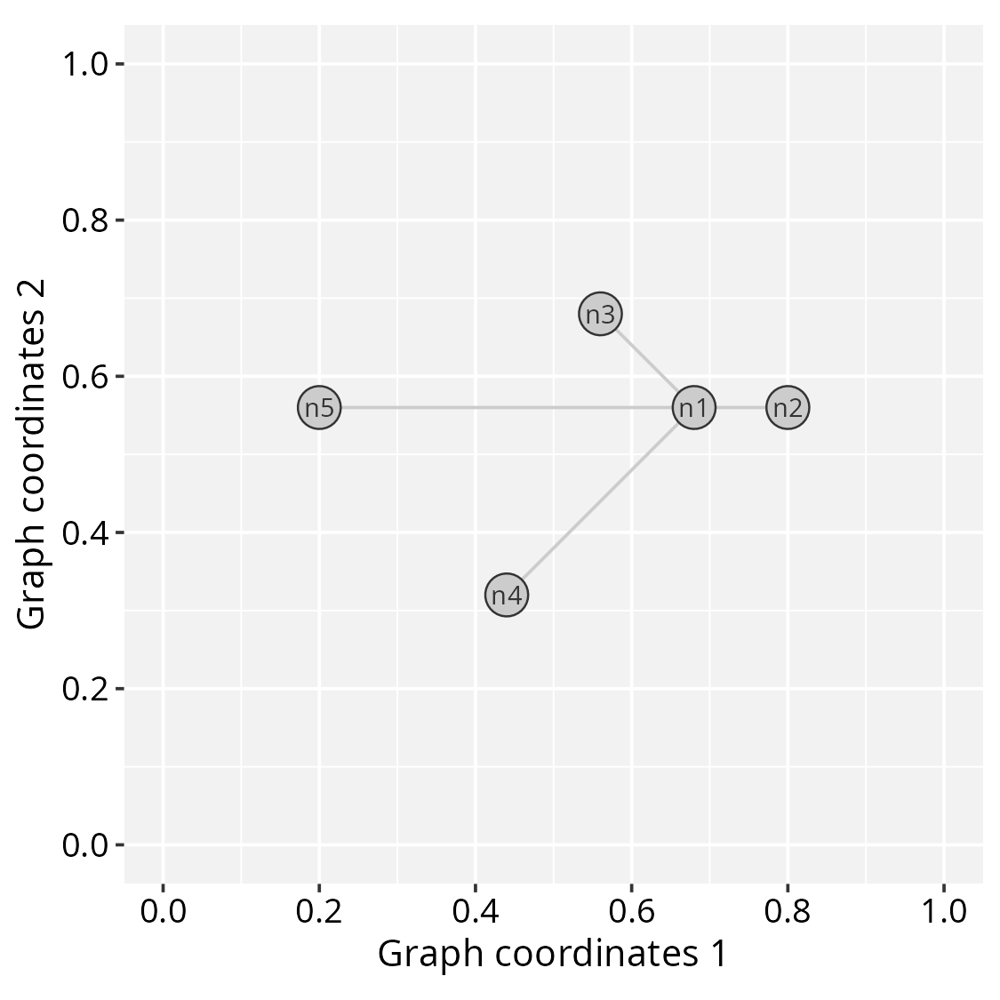
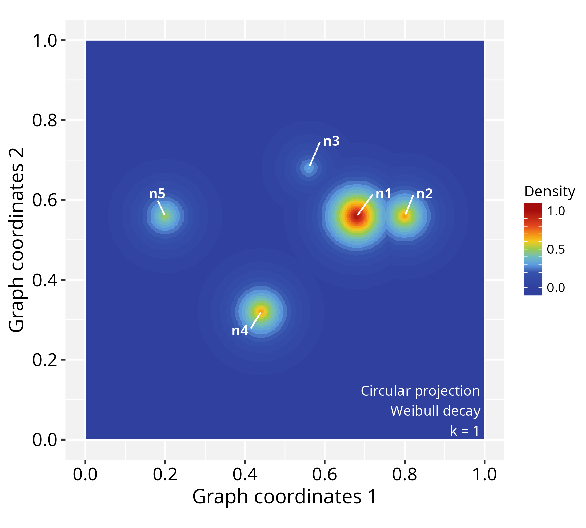
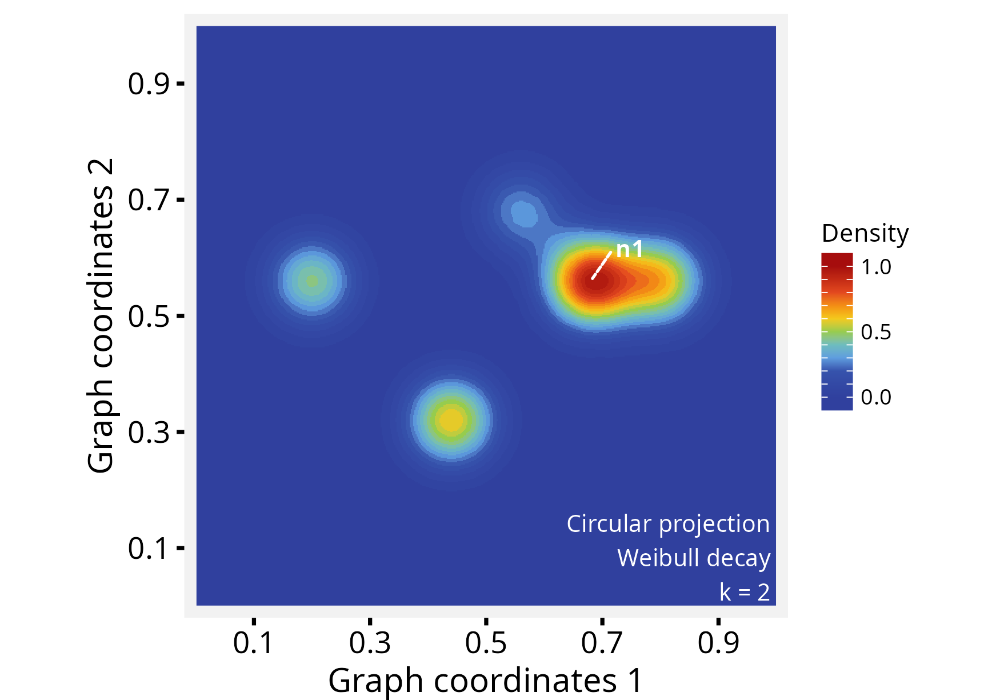
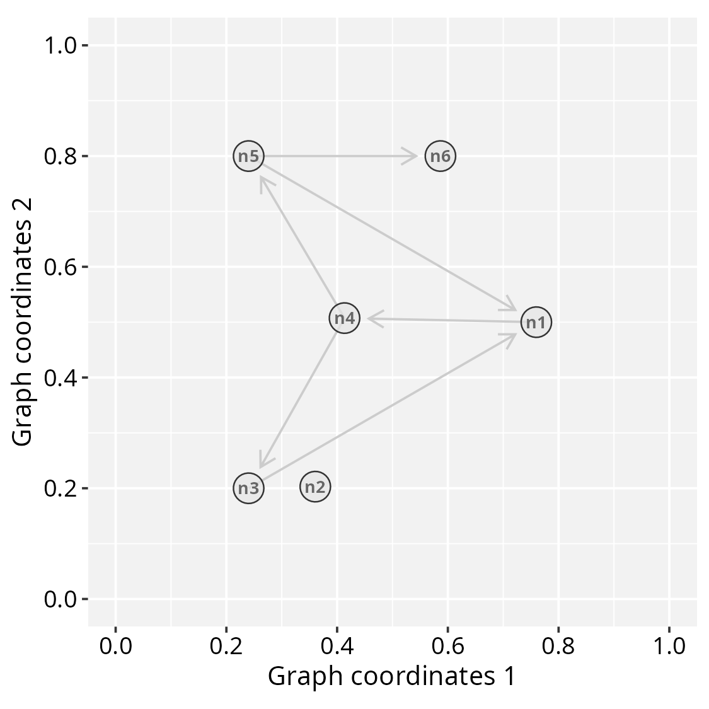
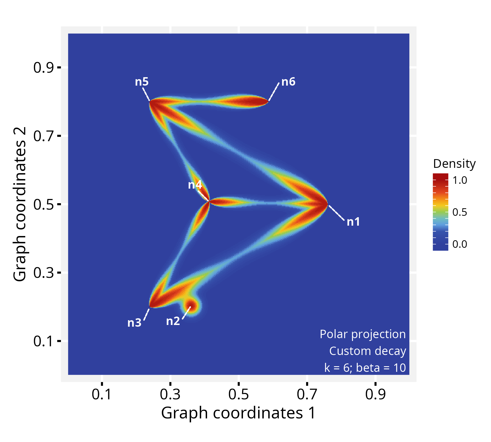
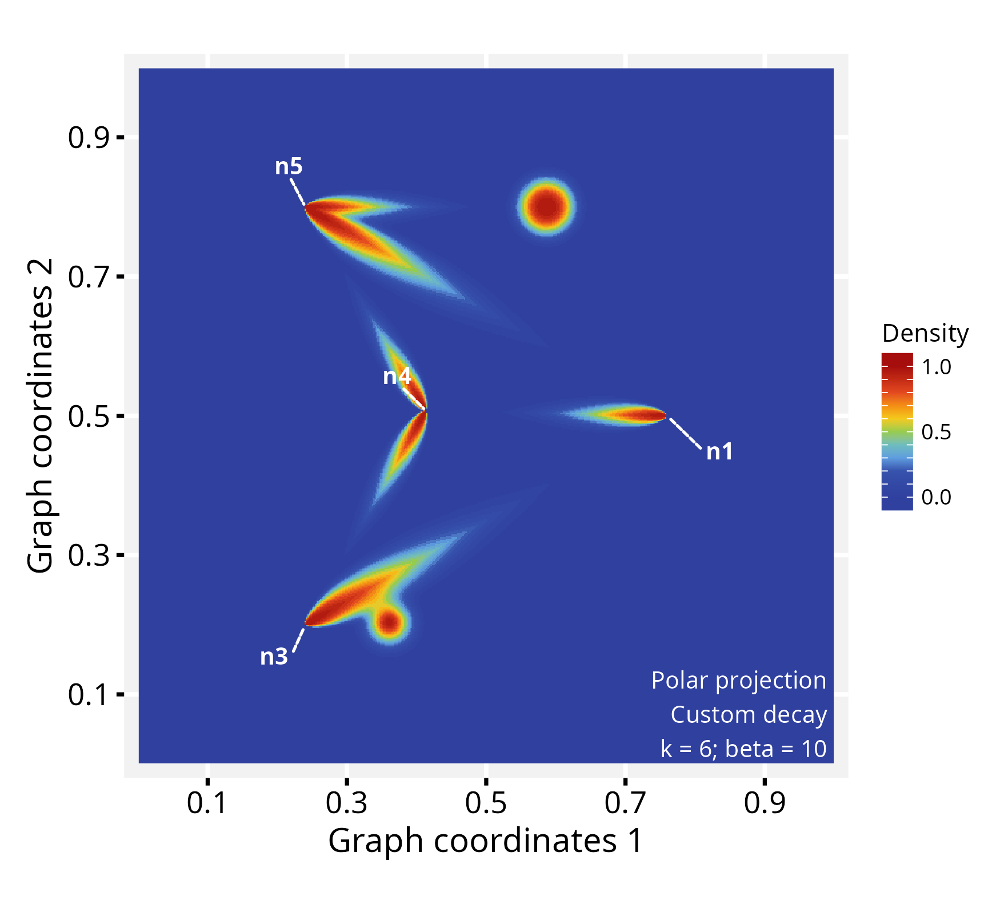
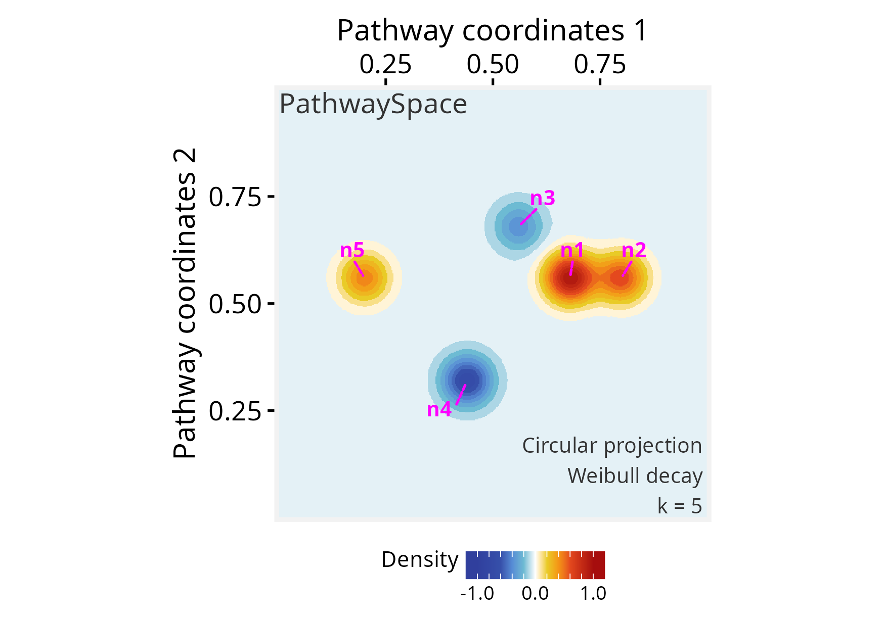

Getting started with *PathwaySpace* projection methods
Sysbiolab Team
2026-06-14
Source:vignettes/PathwaySpace.Rmd
PathwaySpace.RmdPackage: PathwaySpace 1.3.9
Highlights
- Produces landscape images representing graphs by geodesic paths
- Projects signals using a decay function to model signal attenuation
- Applies a convolution algorithm to combine signals from neighboring vertices
Overview
For a given igraph object containing vertices, edges, and a
signal associated with the vertices, PathwaySpace performs a
convolution operation, which involves a weighted combination of
neighboring signals on a graph. Figure 1A illustrates
the convolution operation problem. Each vertex’s signal is positioned on
a grid at specific x and y coordinates,
represented by cones (for available signals) or question marks (for null
or missing values).
![**Figure 1.** Signal processing addressed by the *PathwaySpace* package. **A**) Graph overlaid on a 2D coordinate system. Each projection cone represents the signal associated with a graph vertex (referred to as *vertex-signal positions*), while question marks indicate positions with no signal information (referred to as *null-signal positions*). **Inset**: Graph layout of the toy example used in this vignette. **B**) Illustration of signal projection from two neighboring vertices, simplified to one dimension. **Right**: Signal profiles from aggregation and decay functions.](figures/fig1.png)
Figure 1. Signal processing addressed by the PathwaySpace package. A) Graph overlaid on a 2D coordinate system. Each projection cone represents the signal associated with a graph vertex (referred to as vertex-signal positions), while question marks indicate positions with no signal information (referred to as null-signal positions). Inset: Graph layout of the toy example used in this vignette. B) Illustration of signal projection from two neighboring vertices, simplified to one dimension. Right: Signal profiles from aggregation and decay functions.
PathwaySpace model considers the vertex-signal positions as source points (or transmitters) and the null-signal positions as end points (or receivers). The signal values from vertex-signal positions are then projected to the null-signal positions according to a decay function, which will control how the signal values attenuate as they propagate across the 2D space. For a given null-signal position, the k-top signals are used to define the contributing vertices for the convolution operation, which will aggregate the signals from these contributing vertices considering their intensities reaching the end points. Users can adjust both the aggregation and decay functions; the aggregation function can be any arithmetic rule that reduces a numeric vector into a single scalar value (e.g., mean, weighted mean), while available decay functions include linear, exponential, and Weibull models (Fig.1B). Additionally, users can assign vertex-specific decay functions to model signal projections for subsets of vertices that may exhibit distinct behaviors. The resulting image forms geodesic paths in which the signal has been projected from vertex- to null-signal positions, using a density metric to measure the signal intensity along these paths.
Setting basic input data
#--- Load required packages for this section
library(igraph)
library(ggplot2)
library(RGraphSpace)
library(PathwaySpace)This section will create an igraph object containing a
binary signal associated to each vertex. The graph layout is configured
manually to ensure that users can easily view all the relevant arguments
needed to prepare the input data for the PathwaySpace package.
The igraph’s make_star() function creates a
star-like graph and the V() function is used to set
attributes for the vertices. The PathwaySpace package will
require that all vertices have x, y, and
name attributes.
# Make a 'toy' igraph object, either a directed or undirected graph
gtoy1 <- make_star(5, mode="undirected")
# Assign 'x' and 'y' coordinates to each vertex
# ..this can be an arbitrary unit in (-Inf, +Inf)
V(gtoy1)$x <- c(0, 2, -2, -4, -8)
V(gtoy1)$y <- c(0, 0, 2, -4, 0)
# Assign a 'name' to each vertex (here, from n1 to n5)
V(gtoy1)$name <- paste0("n", 1:5)Checking graph validity
Next, we will create a GraphSpace-class object using the
GraphSpace() constructor, followed by a call to
normalizeGraphSpace(). The constructor ensures the validity
of the input igraph object, while
normalizeGraphSpace() scales the network coordinates. In
this example, we set mar = 0.2 to define the graph’s outer
margins.
# Check graph validity
gs1 <- GraphSpace(gtoy1)
# Normalize node coordinates
gs1 <- normalizeGraphSpace(gs1, mar = 0.2)Our graph is now ready for the PathwaySpace package. We can
check its layout using the plotGraphSpace() function.
# Check the graph layout
plotGraphSpace(gs1, add.labels = TRUE)
Creating a PathwaySpace object
Next, we will create a PathwaySpace-class object using the
buildPathwaySpace() constructor. This will calculate
pairwise distances between vertices, subsequently required by the signal
projection methods.
# Run the PathwaySpace constructor
p_space1 <- buildPathwaySpace(gs1)As a default behavior, the buildPathwaySpace()
constructor initializes the signal of each vertex as 0. We
can use the vertexSignal() accessor to get and set vertex
signals in a PathwaySpace object; for example, in order to get
vertex names and signal values:
# Check the number of vertices in the PathwaySpace object
length(p_space1)
## [1] 5
# Check vertex names
names(p_space1)
## [1] "n1" "n2" "n3" "n4" "n5"
# Check signal (initialized with '0')
vertexSignal(p_space1)
## n1 n2 n3 n4 n5
## 0 0 0 0 0…and for setting new signal values in PathwaySpace objects:
# Set new signal to all vertices
vertexSignal(p_space1) <- c(1, 4, 2, 4, 3)
# Set a new signal to the 1st vertex
vertexSignal(p_space1)[1] <- 2
# Set a new signal to vertex "n1"
vertexSignal(p_space1)["n1"] <- 6
# Check updated signal values
vertexSignal(p_space1)
## n1 n2 n3 n4 n5
## 6 4 2 4 3Signal projection
Circular projection
Following that, we will use the circularProjection()
function to project the network signals by the
weibullDecay() function with pdist = 0.4,
which is passed by the decay.fun argument. This term
determines a distance unit for the signal convolution, affecting the
extent over which the convolution operation projects the signal. For
example, when pdist = 1, it will represent the diameter of
the inscribed circle within the coordinate space. We also set
k = 1, which defines the contributing vertices for signal
convolution.
# Run signal projection
p_space1 <- circularProjection(p_space1, k = 1,
decay.fun = weibullDecay(pdist = 0.4))
# Plot a PathwaySpace image
plotPathwaySpace(p_space1, add.marks = TRUE)
Next, we reassess the same PathwaySpace object, using
pdist = 0.2, k = 2 and adjusting the
shape of the decay function (for further details, see the
online
tutorials).
# Re-run signal projection, adjusting Weibull's shape
p_space1 <- circularProjection(p_space1, k = 2,
decay.fun = weibullDecay(shape = 2, pdist = 0.2))
# Plot PathwaySpace
plotPathwaySpace(p_space1, marks = "n1", theme = "th2")
The shape parameter allows a projection to take a
variety of shapes. When shape = 1 the projection follows an
exponential decay, and when shape > 1 the projection is
first convex, then concave with an inflection point along the decay
path. For additional examples see the modeling
signal decay tutorial.
Polar projection
In this section we will project network signals using a polar
coordinate system. This representation may be useful for certain types
of data, for example, to highlight patterns of signal propagation on
directed graphs, especially to explore the orientation aspect of signal
flow. To demonstrate this feature we will used the gtoy2
directed graph, available in the RGraphSpace package.
# Load a pre-processed directed igraph object
data("gtoy2", package = "RGraphSpace")
# Check graph validity
gs2 <- GraphSpace(gtoy2)
gs2 <- normalizeGraphSpace(gs2, mar = 0.2)
# Check the graph layout
plotGraphSpace(gs2, add.labels = TRUE)
# Build a PathwaySpace for the 'gs2'
p_space2 <- buildPathwaySpace(gs2)
# Set '1s' as vertex signal
vertexSignal(p_space2) <- 1For fine-grained modeling of signal decay, the
vertexDecay() accessor allows assigning decay functions at
the level of individual vertices. For example, adjusting Weibull’s
shape argument for node n6:
# Modify decay function
# ..for all vertices
vertexDecay(p_space2) <- weibullDecay(shape=2, pdist = 1)
# ..for individual vertices
vertexDecay(p_space2)[["n6"]] <- weibullDecay(shape=3, pdist = 1)In polar projections, the pdist term defines a reference
distance related to edge length, aiming to constrain signal projections
within edge bounds. Here we set pdist = 1 to reach full
edge lengths. Next, we run the signal projection using polar
coordinates. The beta exponent will control the angular
span; for values greater than zero, beta will progressively
narrow the projection along the edge axis.
# Run signal projection using polar coordinates
p_space2 <- polarProjection(p_space2, beta = 10)
# Plot PathwaySpace
plotPathwaySpace(p_space2, theme = "th2", add.marks = TRUE)
Note that this projection distributes signals on the edges regardless
of direction. To incorporate edge orientation, we set
directional = TRUE, which channels the projection along the
paths:
# Re-run signal projection using 'directional = TRUE'
p_space2 <- polarProjection(p_space2,
beta = 10, directional = TRUE)
# Plot PathwaySpace
plotPathwaySpace(p_space2, theme = "th2",
marks = c("n1","n3","n4","n5"))
This PathwaySpace polar projection emphasizes the signal flow along the directional pattern of a directed graph (see the igraph plot above). When interpreting, users should note that this approach introduces simplifications; for example, depending on the network topology, the polar projection may fail to capture complex features of directed graphs, such as cyclic dependencies, feedforward and feedback loops, or other intricate interactions.
Signal types
The PathwaySpace accepts binary, integer, and numeric signal
types, including NAs. If a vertex signal is assigned with
NA, it will be ignored by the convolution algorithm.
Logical values are also allowed, but it will be treated as binary. Next,
we show the projection of a signal that includes negative values, using
the p_space1 object created previously.
# Set a negative signal to vertices "n3" and "n4"
vertexSignal(p_space1)[c("n3","n4")] <- c(-2, -4)
# Check updated signal vector
vertexSignal(p_space1)
# n1 n2 n3 n4 n5
# 6 4 -2 -4 3
# Re-run signal projection
p_space1 <- circularProjection(p_space1,
decay.fun = weibullDecay(shape = 2))
# Plot PathwaySpace
plotPathwaySpace(p_space1, bg.color = "white",
font.color = "grey20", add.marks = TRUE,
mark.color = "magenta", theme = "th3")
Note that the original signal vector was rescale to
[-1, +1]. If the signal vector is >=0, then
it will be rescaled to [0, 1]; if the signal vector is
<=0, it will be rescaled to [-1, 0]; and if
the signal vector is in (-Inf, +Inf), then it will be
rescaled to [-1, +1]. To override this signal processing,
simply set rescale = FALSE in the projection function.
Citation
If you use PathwaySpace, please cite:
Tercan & Apolonio et al. Protocol for assessing distances in pathway space for classifier feature sets from machine learning methods. STAR Protocols 6(2):103681, 2025. https://doi.org/10.1016/j.xpro.2025.103681
Ellrott et al. Classification of non-TCGA cancer samples to TCGA molecular subtypes using compact feature sets. Cancer Cell 43(2):195-212.e11, 2025. https://doi.org/10.1016/j.ccell.2024.12.002
Other useful links
RGraphSpace: A Lightweight Interface Between ‘ggplot2’ and ‘igraph’ Objects https://cran.r-project.org/package=RGraphSpace
RedeR: Interactive visualization and manipulation of nested networks https://bioconductor.org/packages/RedeR/
Session information
## R version 4.6.0 (2026-04-24)
## Platform: x86_64-pc-linux-gnu
## Running under: Ubuntu 24.04.4 LTS
##
## Matrix products: default
## BLAS: /usr/lib/x86_64-linux-gnu/openblas-pthread/libblas.so.3
## LAPACK: /usr/lib/x86_64-linux-gnu/openblas-pthread/libopenblasp-r0.3.26.so; LAPACK version 3.12.0
##
## locale:
## [1] LC_CTYPE=en_US.UTF-8 LC_NUMERIC=C
## [3] LC_TIME=en_US.UTF-8 LC_COLLATE=en_US.UTF-8
## [5] LC_MONETARY=en_US.UTF-8 LC_MESSAGES=en_US.UTF-8
## [7] LC_PAPER=en_US.UTF-8 LC_NAME=C
## [9] LC_ADDRESS=C LC_TELEPHONE=C
## [11] LC_MEASUREMENT=en_US.UTF-8 LC_IDENTIFICATION=C
##
## time zone: America/Sao_Paulo
## tzcode source: system (glibc)
##
## attached base packages:
## [1] stats graphics grDevices utils datasets methods base
##
## other attached packages:
## [1] PathwaySpace_1.3.9 RGraphSpace_1.4.1 ggplot2_4.0.3 igraph_2.3.2
##
## loaded via a namespace (and not attached):
## [1] sass_0.4.10 generics_0.1.4 tidyr_1.3.2 lattice_0.22-9
## [5] digest_0.6.39 magrittr_2.0.5 evaluate_1.0.5 grid_4.6.0
## [9] RColorBrewer_1.1-3 fastmap_1.2.0 jsonlite_2.0.0 Matrix_1.7-5
## [13] ggrepel_0.9.8 ggnewscale_0.5.2 ggrastr_1.0.2 purrr_1.2.2
## [17] scales_1.4.0 textshaping_1.0.5 jquerylib_0.1.4 cli_3.6.6
## [21] rlang_1.2.0 tidygraph_1.3.1 RANN_2.6.2 withr_3.0.2
## [25] cachem_1.1.0 yaml_2.3.12 otel_0.2.0 ggbeeswarm_0.7.3
## [29] tools_4.6.0 dplyr_1.2.1 colorspace_2.1-2 vctrs_0.7.3
## [33] R6_2.6.1 lifecycle_1.0.5 fs_2.1.0 htmlwidgets_1.6.4
## [37] vipor_0.4.7 ragg_1.5.2 pkgconfig_2.0.3 beeswarm_0.4.0
## [41] desc_1.4.3 pkgdown_2.2.0 pillar_1.11.1 bslib_0.11.0
## [45] gtable_0.3.6 Rcpp_1.1.1-1.1 glue_1.8.1 systemfonts_1.3.2
## [49] xfun_0.58 tibble_3.3.1 tidyselect_1.2.1 rstudioapi_0.18.0
## [53] knitr_1.51 farver_2.1.2 patchwork_1.3.2 htmltools_0.5.9
## [57] rmarkdown_2.31 compiler_4.6.0 S7_0.2.2